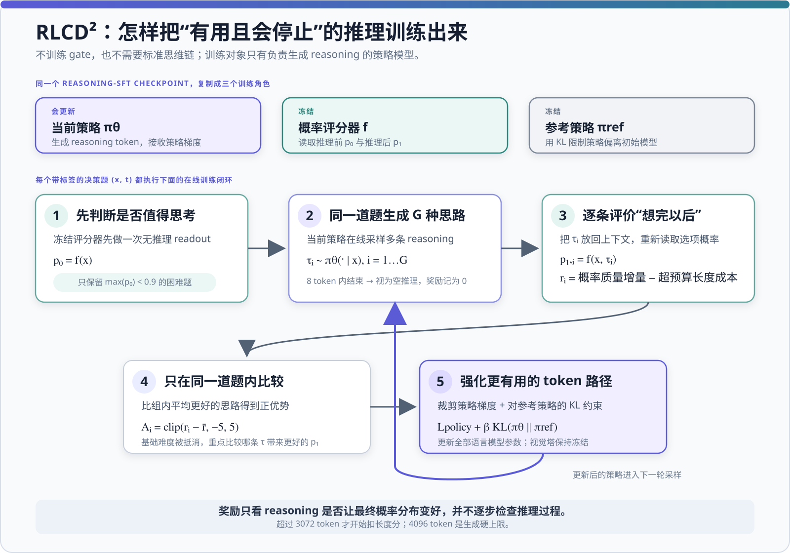

StartLux-Decision v1.1 AutoThink：模型结构与 RLCD² 训练解析
这篇笔记只回答两个核心问题：StartLux 怎样把 Qwen3.8-27B 改造成一个能“先读概率、必要时再思考”的决策模型？RLCD² 又怎样训练这段思考，使它改善概率而不是无限延长？ 评测数字仅保留用于解释训练作用的最小集合。
1. TL;DR
- 27B AutoThink 的直接基座是 Qwen3.8-27B。虽然 Transformers 类名仍叫
Qwen3_5ForConditionalGeneration，权重形状、tokenizer、模板与数值距离都指向 Qwen3.8。 - 文本骨干是 64 层混合 Transformer：48 层线性注意力 + 16 层全注意力，每四层出现一次 full attention。
- 它没有新建决策分类头。候选项映射到 A–Z，直接读取原 LM Head 的候选 token logits，再做温度缩放和 softmax。
- AutoThink 先得到
p₀；若最大概率低于 gate，再生成推理τ，得到p₁，最终返回 0.25p₀ + 0.75p₁。 - 训练分三段：全参数决策 SFT → adapter 扩展任务并合并 → reasoning supervision + 全参数 RLCD²。
- RLCD² 的奖励是：推理后概率质量 − 推理前概率质量 − 超过软预算的长度成本。发布模型用 decision-weighted proper score、3072-token 软预算和 4096-token 硬上限。
- 权重实证显示：训练主要改写 MLP、全注意力和线性注意力；视觉塔保持冻结，LM Head 几乎未动。
2. 模型结构：Qwen3.8 混合骨干，不增加决策头
2.1 直接基座与精确配置
27B AutoThink 延续 Qwen3.8-27B 的文本与视觉主干。其核心配置如下：
| 结构项 | 27B AutoThink | 作用 |
|---|---|---|
| 文本层数 | 64 | 主语言模型深度 |
| 注意力层构成 | 48 linear + 16 full | 线性递推负责效率，全注意力周期性整合全局信息 |
| Hidden size | 5,120 | 残差流宽度 |
| FFN intermediate | 17,408 | MLP 容量，也是训练后变化最明显的模块 |
| Attention heads / KV heads | 24 / 4 | GQA，多 query head 共享较少 KV head |
| Head dimension | 256 | 每个注意力头维度 |
| 词表 / 最大位置长度 | 248,320 / 262,144 | 沿用基座 tokenizer 与 256K 上下文配置 |
| 视觉塔 | 27 层，约 460.7M 参数 | 训练期间冻结，输出映射到文本 hidden size |
2.2 从候选标签到概率
调用方提供状态、问题和候选项。runtime 把候选项依次标为 A、B、C……，读取答案位置上这些标签的 logits：
choice、noul 和 score 共用相同 readout；区别主要在 prompt、候选构造和后处理。27B 的三个温度分别约为 0.9503、1.3760、1.0108。温度改变概率尖锐度，不改变候选排序。
choice
候选项直接映射为 A–Z，输出完整概率分布。
noul
构造成二选一判断，最终返回“是”的概率。
score
2–10 档有序概率，并可计算期望分。
超过 26 项
分组淘汰后再决赛，不再等价于一次联合 softmax。
2.3 Read-or-Think 前向流程
推理生成使用 temperature 0.6、top-p 0.95、top-k 20，最多 4096 token。论文主要结果使用 gate=0.9；公开服务器默认值一度为 0.6。gate 是 runtime 策略，不是一个额外学习出来的神经网络门控头。
<think></think> 结尾的 prompt，只从 LM Head 中抽取 A–Z 得到 p₀。若低于 gate，runtime 会把同一问题重新渲染为开启思考、以 <think> 开头的 prompt，并用完整词表自回归生成轨迹；闭合 </think> 后再抽取 A–Z 得到 p₁。第二次不再检查 gate，直接按配置混合 p₀ 与 p₁。
3. 三阶段训练：先学概率，再扩任务，最后恢复推理
Decision SFT
Lux-Release
27B 约 80 万条记录
对完整文本主干与 LM 输出投影做全参数监督训练，以目标概率分布和候选 logits 的精确 soft cross-entropy 建立 typed decision 能力。
Task Expansion
Lux-Rounds
约 170 万条记录
训练 adapter 扩大任务覆盖，完成后合并回 dense 权重。Instant 同时学习 prompt 双向 full attention；AutoThink 保持全因果结构。
Reasoning + RLCD²
Lux-Think
每尺寸约 4千–2.1 万条推理样本
先用 reasoning adapter 恢复推理生成并合并，再用 RLCD² 对全部语言模型参数做策略优化；视觉塔始终冻结。
3.1 Stage 1：直接优化完整概率分布
训练目标不是只让正确选项排第一，而是对目标分布 t 和候选概率 p 做交叉熵：
这里使用候选 logits 的精确梯度，而不是先采样一个答案再做 policy gradient。论文的独立消融显示，直接概率梯度比 sampled policy gradient 更容易改善校准。
3.2 Stage 2：adapter 是训练手段，不是最终结构
Stage 2 使用 adapter 降低多轮配方实验成本，但发布 checkpoint 已把 adapter 合并进原权重。权重文件中没有独立 LoRA/adapter tensor，也没有扩大的层维度。因此部署时仍是普通 dense 模型，不需要旁路模块。
3.3 Stage 3：reasoning supervision 是 RL 的前置条件
决策训练会削弱模型生成和正常结束推理的能力，所以作者先用推理示范恢复“会写、会停”的轨迹，再进行 RL。若直接对一个经常输出空轨迹的 checkpoint 做 policy gradient，模型会学会大量跳过推理；单纯提高最大生成长度也不能修复重复循环。
3.4 训练数据怎样构造
所有来源先统一成 typed-decision 记录：state + question type + options + target distribution + label provenance + parent-group ID。软目标可以保留多人标注分歧；选项按记录哈希确定性打乱，过长记录直接排除，同一原始状态的变体按 parent group 一起切分和去污染。
| 数据 | 主要构造方式 | 公开边界 |
|---|---|---|
| Lux-Release | 把公共分类、推理、QA、安全、偏好、工具调用与知识多选题改写为决策记录，并混入社区与程序生成数据；0.8B–9B 约 270 万条，27B 约 80 万条。 | 论文给出来源大类和比例，没有发布完整清单。 |
| Lux-Rounds | 约 170 万条，增加 benchmark 训练集、相关公开数据、程序化流程题、select-all、模型生成与 teacher 标注题，并回放部分 Lux-Release。 | 模型生成标签只有在两个独立 verifier 都能恢复该标签时才保留。 |
| Lux-Think | 每个模型约 4千–2.1 万条监督推理轨迹，用于恢复推理生成与正常终止。 | teacher、采样数、过滤阈值和数据文件均未披露，不能严格复现。 |
| RLCD² prompts | 不是离线标准 CoT；从带目标分布的决策题中筛出 max(p₀)<0.9 的困难题，再由当前 policy 在线采样 reasoning。 | 完整 prompt 池、group size 和训练超参数未披露。 |
程序生成题使用独立模板和确定性计算标签；模型生成题由两个 verifier 盲验。训练记录还会对 Decision Index、JevBench、DecisionPivot 等 held-out 集做匹配，并按 parent group 删除相关变体。公开资料足以理解数据工程，但不足以一比一重建 Lux-Think 与 RL 数据。
4. RLCD²：奖励“推理带来的概率改善”
4.1 一张图看懂训练闭环

三个角色均初始化自 reasoning-supervised checkpoint。冻结 scorer 防止奖励随 policy 一起漂移；reference 通过 KL 限制更新幅度；只有当前 policy 接收梯度。RL 不需要人工标准思维链，也不把梯度穿过 scorer：它只用 scorer 返回的序列级奖励更新被采样轨迹中各 token 的生成概率。最终部署只保留更新后的 policy。
4.2 为什么不用“答对 +1，答错 0”
RLCD² 使用 proper scoring rule 评价整个概率分布。论文讨论 Brier score、log score，并在发布模型中采用 decision-weighted score：
其期望梯度满足 ∂E[s]/∂q = w(q)(π−q)，因此最优报告仍是真实概率，而不是盲目把正确选项推到 1。对于有序 score，评分作用于累计概率。
4.3 奖励函数与长度预算
概率改善项
推理后分布比初始分布更接近目标时得到正奖励；即使 argmax 不变，校准改善仍可获益。
软长度项
前 3072 token 不扣分；超出后每 token 扣 10⁻⁴。达到 4096 时总长度罚分为 0.1024。
4.4 Group-relative policy gradient
每个 prompt 采样 G 条推理轨迹，组内中心化奖励并裁剪优势：
- 只训练初始最大概率低于 0.9 的问题，与论文推理 gate 对齐。
- 8 token 内结束的轨迹视为空推理，奖励直接设为 0。
- 所有语言模型参数参与 RL 更新，而不是只训练一个输出头。
- 论文没有披露
G、ε、β、学习率、batch size 和训练步数。
4.5 一个重要但容易忽视的抵消项
同一 prompt 的所有非空轨迹共享相同的 S(p₀,t)。经过组内中心化后，这一项会抵消：
所以在全是非空轨迹的组里，直接梯度信号主要来自“哪条轨迹产生更好的 p₁”以及长度差异。p₀ 是解释增量价值的基准；空轨迹的零奖励才为“是否值得思考”提供特殊参照。
4.6 RLCD² 实际学到了什么
这一组数字概括了 RLCD² 的主要作用：大幅修复循环和不终止，基本维持准确率。受控消融进一步显示，长度罚分主要负责终止，proper-score 奖励主要负责概率质量。27B 在 RL 前已经能用约 313 token 完成推理，因此边际变化很小。
5. 权重文件告诉我们的训练事实
5.1 与 Qwen3.8 原版的精确结构差异
StartLux 保留 Qwen3.8 的 64 层主干，删除了一层 mtp.* 多 token 预测辅助模块，包括注意力、MLP、norm 与 pre-FC 投影。推断上，这些权重不是 typed decision 或常规自回归服务所必需；论文没有明确解释删除动机。
权重审计方法与边界
5.2 变化集中在哪里
相对改变量定义为 RMS(StartLux−Qwen3.8) / RMS(Qwen3.8)。它描述更新幅度，不等于参加训练的参数比例。
适配重点是 FFN/MLP、门控投影和注意力 Q/K/V 等内部变换，而不是词表输出矩阵。变化最大的层多出现在第 3、7、11、15、19、23、27 层，恰好对应每四层一次的 full-attention 节点。
6. 主要资料
- StartLux-Decision 技术报告：模型设计、三阶段训练、RLCD² 公式和消融。
- StartLux-Decision 官方仓库：推理流程、服务实现和公开配置。
- 27B AutoThink 模型仓库：权重、配置、温度和模型卡。
- Qwen3.8-27B：原版基座的配置与权重。